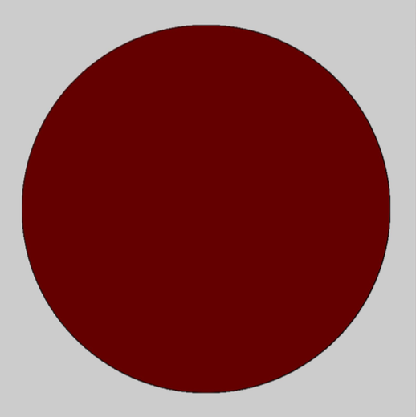

Logical Dot
You are going to draw a circle that changes color when you click the mouse.
1. Find the starter code for this recipe and open it using Processing (Hint: the file name is Logical_Dot.pde) and it should be in the section1 folder.
2. Find the setup() method. Set the size of your sketch to (600, 600) inside the setup() method.
3. Find the draw() method.
4. Draw an ellipse inside the draw() method.
5. Make your ellipse a nice color.

TESTING
Run the program. Is a circle displayed and is it the right size and color? If not, get this part working before you move on to the next step.
6. In the draw() method, make it so that if the mouse is pressed the color of the ellipse changes.
if (mousePressed) {
// fill with one color here
} else {
// fill with a different color here
}